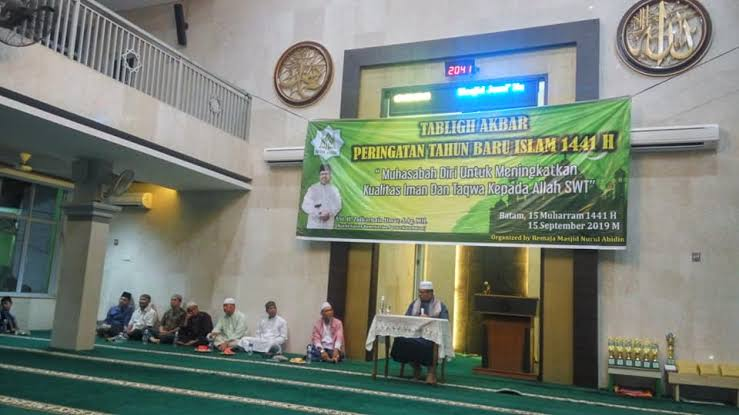

Kegiatan Sosial
Kegiatan Sosial
Informasi dan dokumentasi kegiatan sosial masjid akan diperbarui setelah dikonfirmasi oleh pengurus.
Pusat ibadah, ilmu, dan kegiatan sosial bagi masyarakat.


Informasi mengenai profil, sejarah, dan aktivitas Masjid Nurul Abidin akan disajikan di sini sebagai sumber informasi bagi masyarakat.
Perumahan Citra Batam Perlu verifikasi
Masjid Profil resmi menyusul
Profil dan aktivitas Detail menyusul
Berbagai kegiatan ibadah, kajian, dan aktivitas sosial yang melibatkan jamaah dan masyarakat.
Informasi dan dokumentasi kegiatan sosial masjid akan diperbarui setelah dikonfirmasi oleh pengurus.
Informasi kegiatan kajian dan ibadah akan ditampilkan berdasarkan jadwal dan dokumentasi resmi.
Informasi aktivitas pendidikan dan pembelajaran keagamaan akan dilengkapi berdasarkan data pengurus.
Needs Section — Coming Next
Donation Section — Coming Next
Contact Section — Coming Next